MongoDB Product Design
May 2018 - August 2018
This summer, I had the opportunity to intern as a product designer for MongoDB Stitch. Stitch is a MongoDB's serverless platform, which allows developers to focus on what makes their app unique instead of having to focus on the backend and infrastructure.
I worked on projects of all scales, from features to a whole day of user research to small usability fixes. Here, I will go over my large scale projects, a metrics dashboard and a dropdown flow, in greater detail.
Project #1: Consumption Metrics
Problem Area
A Stitch user’s consumption is split up into compute and data transfer. The user is given a free tier of 25GB of data to transfer. For compute, the user has two options: compute GB-s or number of requests. The user is given either a free tier of 100,000 GB-s or 1,000,000 requests. The user will be billed once he has exceeded either the GB-s or requests threshold.
However, currently, there is no way for a user to see his/her Stitch usage.
Research
To understand Stitch's competitive enviornment, I analyzed our main competitors, looking for possible inspiration, difficulties, what they are doing well, maybe not so well, and what their users are saying about their product. Next, I cross-referenced my findings and presented this to my manager and PM. After discussing, I drew the biggest takeaways and took that forward into my ideation process.
Ideation
After getting a good understanding of the project and how our competitors are dealing with this problem, I concluded that I wanted our solution to present both a quick summary as well as a way for the user to investigate further if he/she wanted to.
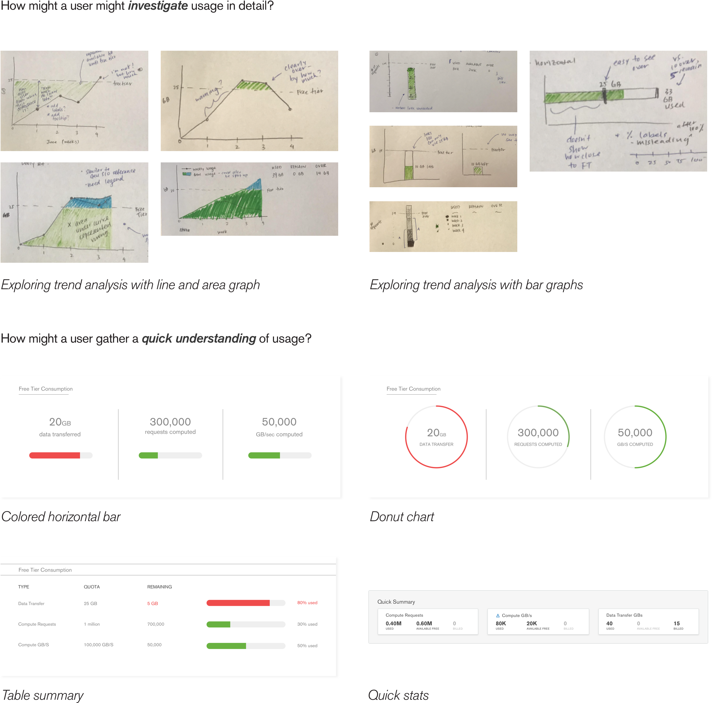
User Research Feedback
After many ideation cycles, I finally landed on a medium fidelity mockup. I tested this design with 5 internal engineers.
I prepared a script along with specific metrics I was going to observe for in order identify the design's success:
How long it takes for the user to identify what their current Stitch usage is.
How accurately user identifies their Stitch usage, how much, over, and close to their free tier.
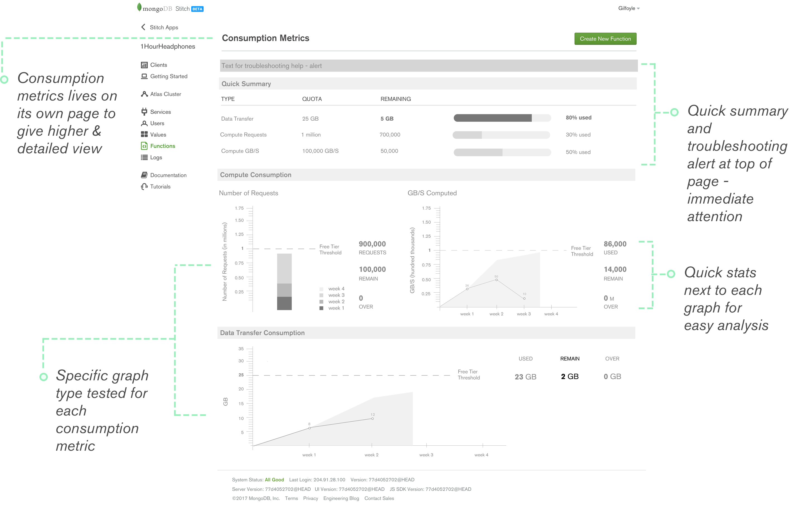
Main Takeaways
The quick summary took care of the design's success metrics. However, it presented too much information and came off overwhelming.
There was confusion about how billing cycle and compute consumption works.
Quick summary was being used for a quick "Am I over the threshold" scan versus the graph was used for "how."
The horizontal area + line graph was easier to analyze usage trend.
Latest Iteration
After user testing, I went back into IA, touched up on the insights from the competitive analysis and user research, and made sure I had very a clear understanding of the project's objectives.
Finally, I landed on this latest iteration.
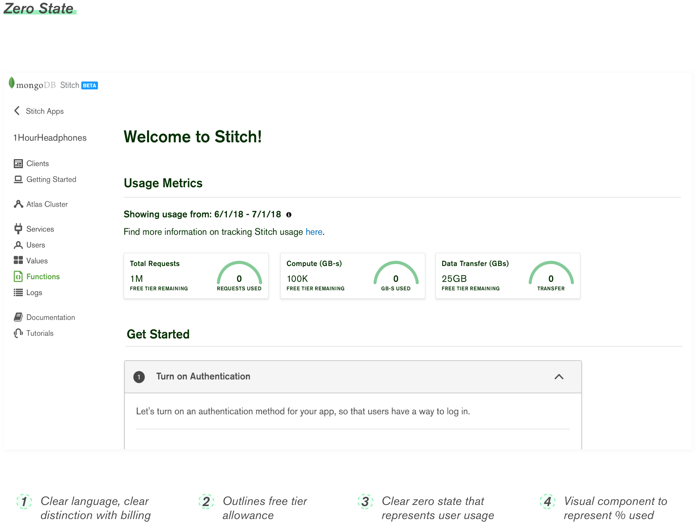
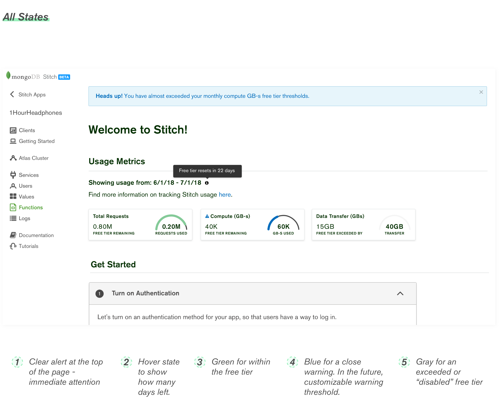
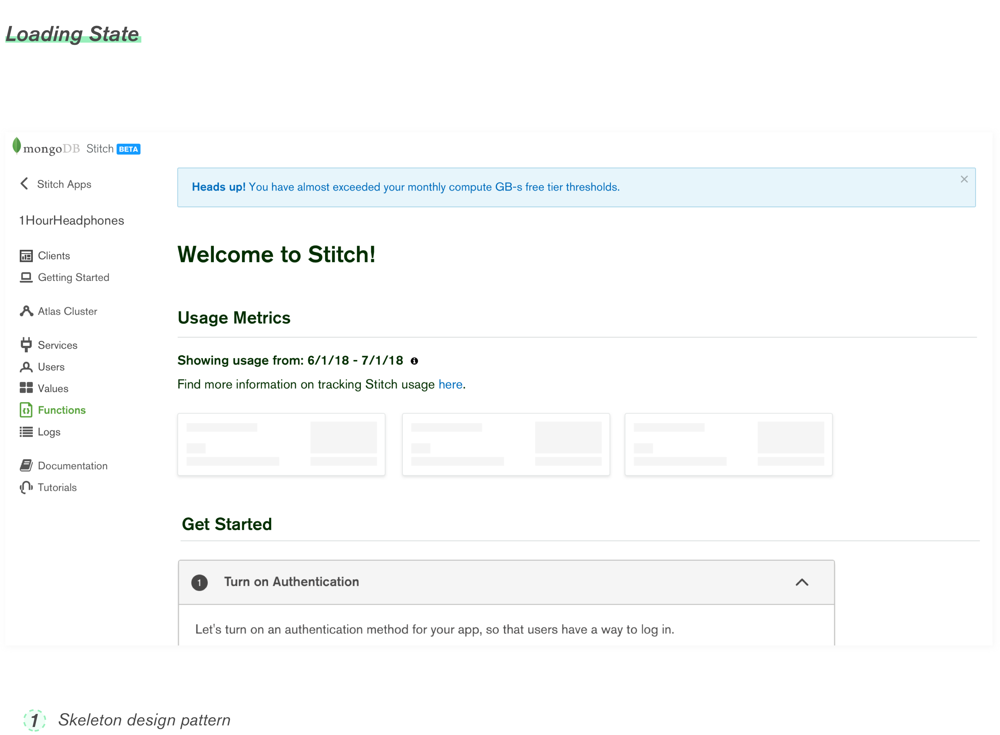
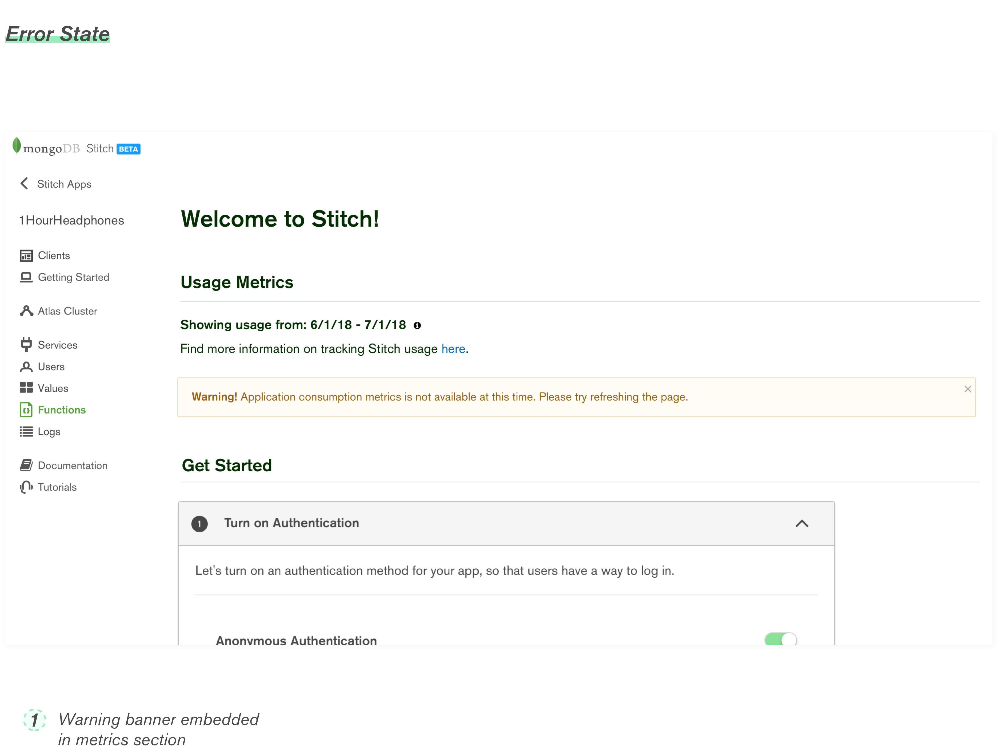
Prototype
In order to share my designs with the engineers and the product manager, I created an Invision prototype. A walkthrough is provided in the video below. However, feel free to try it out here!
Project #2: Trigger Dropdown Flow
Problem Area
When users create a trigger, they must connect the trigger to a database and collection source. Currently, our UI provides users raw text input fields. However, after user testing at World, we observed this hindered the user’s experience. Users found it tedious to manually type their database and collection name and difficult to memorize the format of the names and the name itself.
Because of this problem, this project takes a greater dive into improving this process with a dropdown component.
After investigating the problem area further, I realized that a user approaching this dropdown could have 4 different priorities: creating a brand new database and collection, searching for a desired collection, creating a collection inside an existing database, and searching for a desired collection that does not exist. These wide range of use cases added another dimension of complexity into this dropdown. The four different user journeys are illustrated in the diagram below.
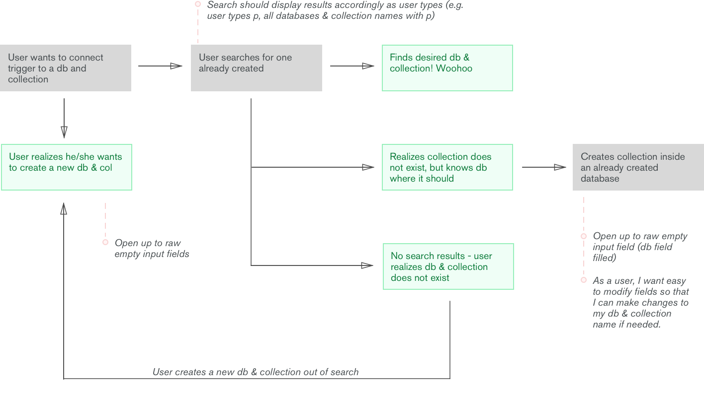
Research
To explore how others are dealing with this problem, I explored on dribbble, other cloud providers, and other MongoDB products.
Our current design solution is inspired by MongoDB Compass.
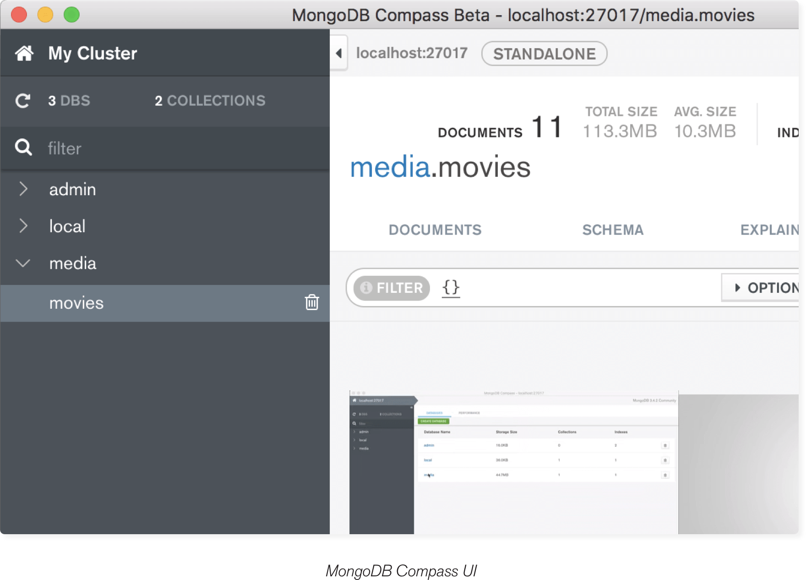
User Test Feedback
Upon user testing at World, we identified key pain points that call for change. These pain points include:
Difficulty finding database/collection name.
Having to input raw text.
Can't remember exact format of database/collection name (ie: hypen vs. no hypen).
Can imagine the variety of difficult names users might have.
Broken flow - user has to leave page to get the name and then come back.
Ideations
To quickly experiment with ideas, I went through many iterations of low fidelity hand sketches.
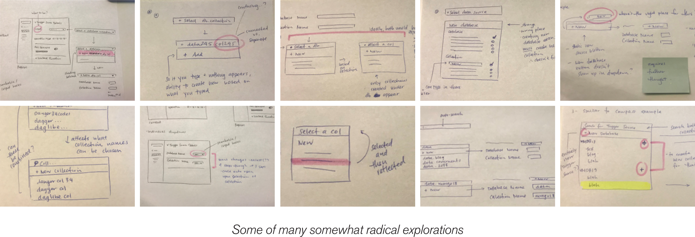
Next, I moved on to medium fidelity mockups using MongoDB's already existing design patterns.
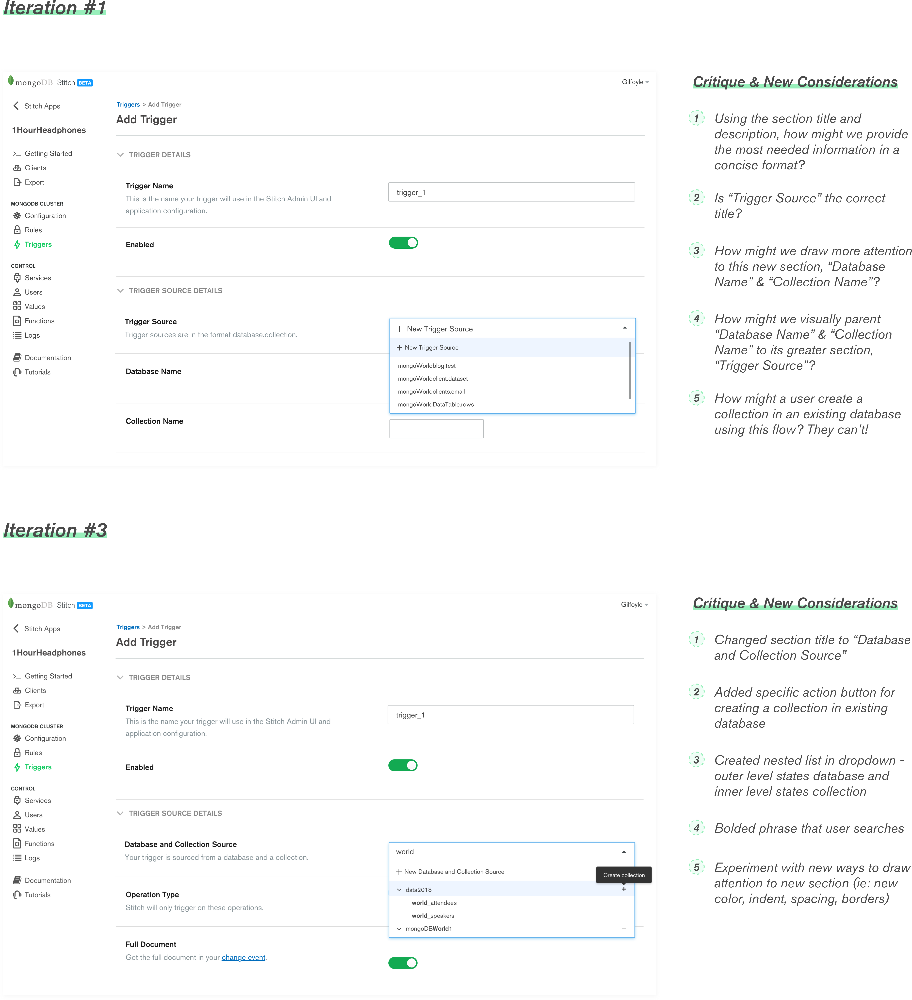
Latest Iteration
After a lot of collaboration with my manager, presenting at critiques with engineers and my design team, I landed at this latest iteration.
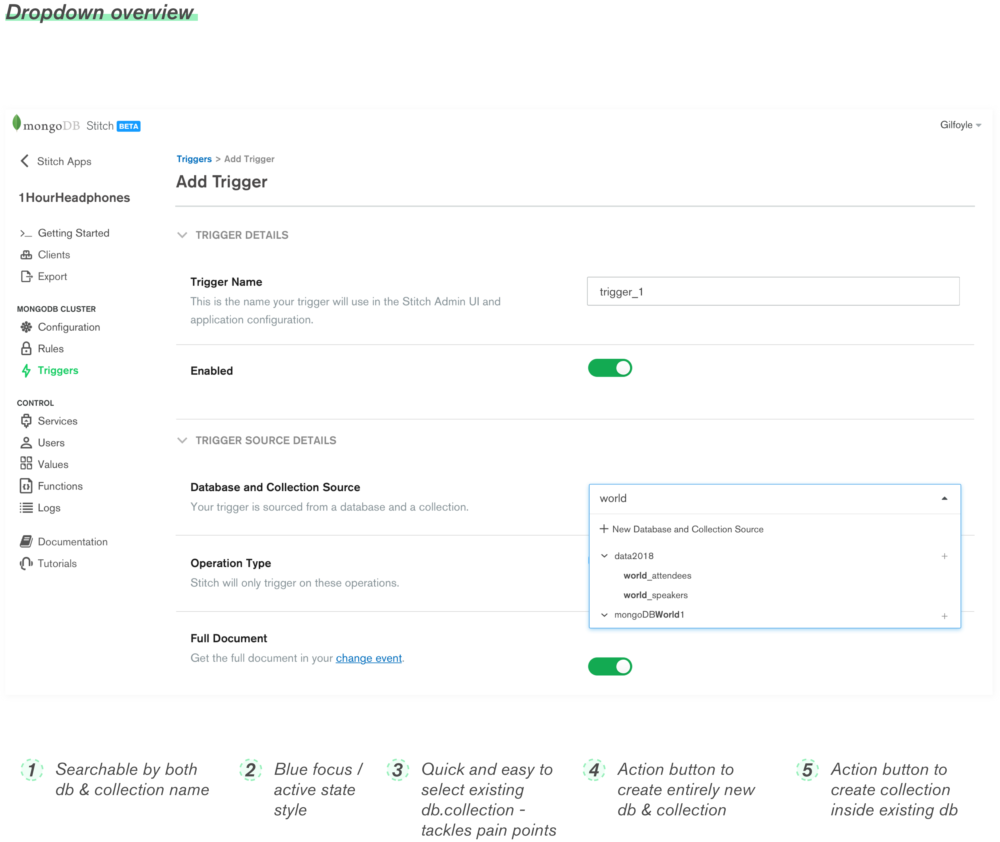
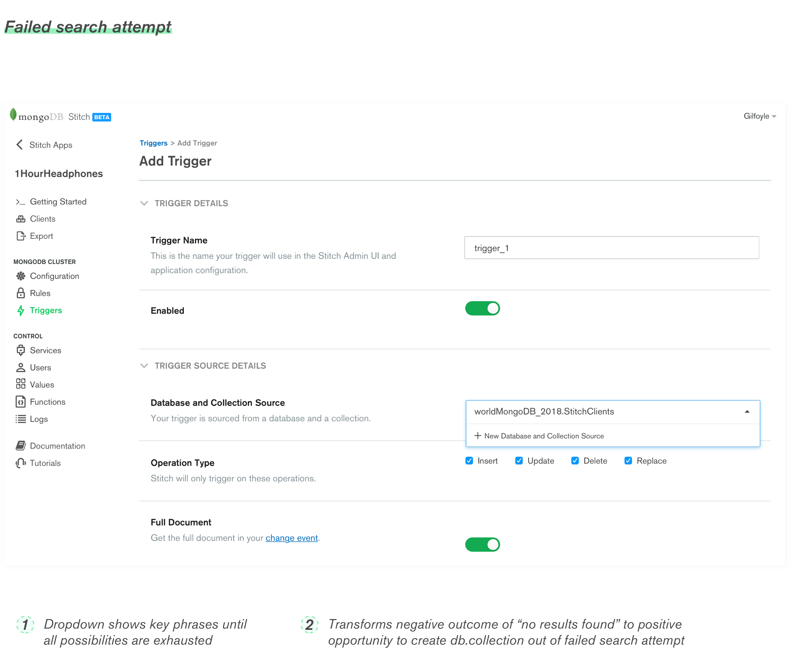
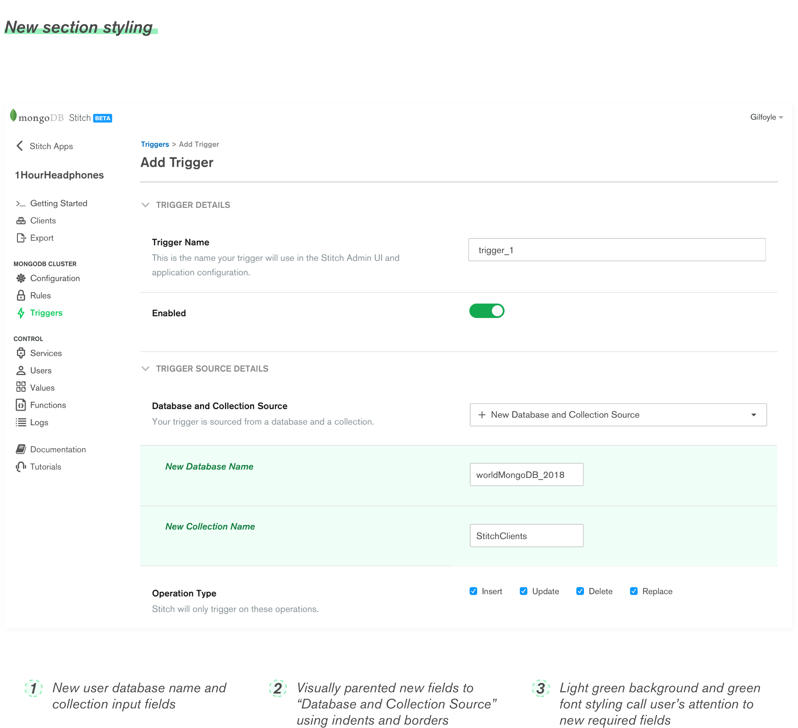
Prototype
In order to share my designs with the engineers and the product manager, I created an Invision prototype. A walkthrough is provided in the video below. However, feel free to try it out here!
Lessons Learned
Small problems can actually be really big problems. More often than not, usability fixes are the details. However, its the small details that take the user experience the extra mile.
The truth to "fail often to succeed sooner" and how failure teaches us a lot more than success.
The importance of communication, whether that be with your design team, your engineers, your manager, or your PM, throughout the entire project.